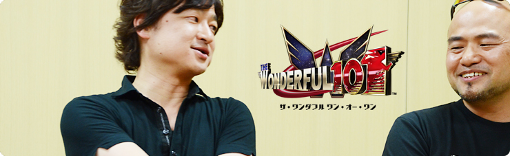
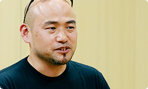
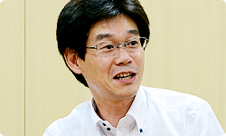

<div class="l-category-local-header">
<div class="category-local-header">
<div class="category-local-heading"><span>社長が訊く</span>
<div class="category-local-sub">IWATA ASKS


<div class="l-soft-topic-path is-block">
<div class="l-soft-topic-path-inner">
<div class="soft-topic-path">
<ul class="topic-path"><li class="topic-path-item"><span>The Wonderful 101</span></li></ul>


<div id="page-container">
<header class="interviewheader">
<h2 class="interviewheader__ttl"><span class="subtext">社長が訊く</span>『The Wonderful 101』</h2>

</header>
<div class="tabmenu-container">
<p class="tabmenu__ttl">シリーズ一覧
<ul class="tabmenu__body tabnum2">
<li class="tabmenu__item tab1">神谷 英樹さん 篇</li>
<li class="tabmenu__item tab2">開発スタッフ 篇</li>
</ul>

<div class="hero-container">
<div class="hero__img">


<div class="interviewsubheader">
<div class="interviewsubheader__ttl"><h2>開発スタッフ 篇</h2>

<div class="pageindex-container">
<p class="pageindex__ttl">目次
<ul class="pageindex__body">
<li class="pageindex__item">1. 集まることで生まれる力</li>
<li class="pageindex__item active">2. 「変えないとダメだ」</li>
<li class="pageindex__item">3. つくってはつぶす</li>
<li class="pageindex__item">4. 「入ったほうがプラスになる」</li>
<li class="pageindex__item">5. ワンダ・ディレクター</li>
<li class="pageindex__item">6. 「怖がらないで、飛び込んで」</li>
</ul>

<div class="interview-container">
<h3 class="interview__ttl">2. 「変えないとダメだ」</h3>

岩田
: 任天堂に２度目の企画持ち込みをするにあたって、<br>プラチナゲームズさんの社内では<br>どんなことがあったんですか？<br>おそらくですけど、<br>すんなりとつくり直されたはずがないって思うのですが。


稲葉
: そうですね。プラチナゲームズとしても<br>「キャラクターありき」の企画でしたから、<br>その許可が下りない以上<br>難しいだろうということで、<br>企画自体は一度ストップしています。<br>神谷も一時、別の企画にとりかかっていたんです。


岩田
: そうだったんですか。


稲葉
: ところが、結果的に<br>その新しい企画もいろんな事情が重なって、<br>お蔵入りしてしまって。<br>それで「次はどうしようか」って<br>神谷と話をしたときに、<br>「こないだの企画がやっぱりやりたい」<br>とゴネられたわけです。


神谷
: いや、だって、そんなに次から次へと<br>僕から新しい企画は出ませんよ。


一同
: （笑）


稲葉
: そこで、いろいろ検討したすえに、<br>当初提案した遊びはそのままに、<br>既存キャラクターをヒーローに置き換えたデモを<br>ＰＣ上で試作して、<br>あらためて任天堂さんに持ち込んだんです。


岩田
: その段階で、いまの<br>ヒーローたちを主人公とする<br>キャラクター像ができたんですか？


神谷
: いや、イメージはだいぶちがいましたね。


山上
: 企画がスタートした当初は<br>『ビューティフルジョー』（※11）のような雰囲気で<br>アメコミ調のダークヒーローっぽい<br>イメージだったんですよ。<br>僕はその画がけっこう好きだったので、<br>「これでいける」と思っていたんですが。

※11『ビューティフルジョー』＝２００３年６月にカプコンよりゲームキューブ用ソフトとして発売された横スクロールアクションゲーム。デフォルメされたアメコミ調のグラフィックや、ＶＦＸアクションと呼ばれる時間や空間を操るアクションが特徴で、シリーズ化およびテレビアニメ化もされている。


岩田
: はい。


山上
: アクションゲームが好きな松下さんに<br>「この企画、おもしろいからやらない？」<br>って言って見せたんです。そしたら松下さんが<br>「これは画が暗いから、小中学生にはウケない」<br>みたいなことを、いきなり言ってきたんです。


岩田
: 松下さん、いきなりそんなことを言ったんですか？


松下
: 言いました（笑）。「変えないとダメだ」という<br>強い確信があったんですね。<br>でも「ダークなアメコミ調はやめてください」とは<br>つくったご本人にいきなりお伝えしにくいわけで・・・。


岩田
: たしかに、はじめてお付き合いするのに、<br>いきなりつくったご本人にそれでは<br>いくらなんでも失礼すぎますよね（笑）。


松下
: プラチナゲームズさんはすごく<br>こだわりの強い人たちだと聞いていたんで、<br>そこはどのように伝えたらいいのか、<br>もしくはこのままプラチナゲームズさんのコンセプトを<br>優先して進めるべきなのか、<br>社内でもかなり議論をしたんです。


岩田
: でも最終的にいろんな人に<br>広く届けるためには、<br>ビジュアルを変えてもらうことが<br>必要不可欠だと考えたわけですね。


松下
: そうですね。そこはストレートに<br>お願いするしかないだろう、と。


岩田
: 神谷さんはその時、<br>どんな反応をされたんですか？


神谷
: その話がきたときには、正直<br>「やっぱりそこにきたか」と思いました。<br>自分でも「このままだとちょっとニッチだな」<br>という思いはあったんです。<br>でも、それをどうすればよくなるのかが、<br>自分の中ではっきりつかめてなかったんですね。<br>そんな時に、任天堂さんからの指摘を<br>稲葉経由でうかがいまして・・・。




稲葉
: （神谷さんに向かって）あたかも自分が<br>素直に話を聞き入れたかのように言ってますけど、<br>相当もめたよね？


神谷
: まあ、稲葉には子供のように抵抗しましたね。


一同
: （笑）


岩田
: 長い付き合いの稲葉さんは、<br>それを見て「痛いところ突かれたんだな」って、<br>わかるわけですね。


稲葉
: いや、神谷のたちが悪いのは、<br>本当にこだわって抵抗しているときとの差が、<br>あんまり変わらないんですよ。


岩田
: 区別がつきにくい人なんですか？


稲葉
: はい。<br>「わかったよ、プロデューサー様が<br>　言ってるんだからしょうがないな」<br>みたいな感じで動き出すわけです。


一同
: （笑）


山上
: でも結果的に「変えてください」と<br>投げたボールに対して返ってきたビジュアルは<br>我々の思っていたものと<br>ひと味ちがうものだったんですけど、<br>「言われたとおり直しました」じゃないところが<br>さすがに神谷さんだなと思いました。


神谷
: あの時に「リアルフィギュア・リアルおもちゃ」<br>というコンセプトが生まれたんですよね。<br>ポップでもあり、写実的でもあるという。


岩田
: たしかに、あの表現はあまり見たことがない<br>ユニークさを持っているうえに、<br>明るくてポップという条件も備えてますよね。


稲葉
: 神谷独特のアクは残っているんですけど、<br>余分だったダークさがほどよくそぎ落とされて、<br>すごくいいバランスになったと思います。


岩田
: そうなると、あとはつくるだけですね？<br>もともとのゲームの骨子自体は<br>企画書の段階でほぼ見えていますので。


山上
: そうですね。さきほど話が出たとおり、<br><span>ユナイト・モーフ</span>を軸にしたゲームの構造は、<br>最初からほぼそのまま、活かされています。<br>プレイヤーがたくさんの隊員を引き連れて<br>行動していくわけですけど、<br>彼らをユナイト・モーフで変形させ、<br>大きな１キャラクターとしての能力を使って<br>マップ上の問題を解決し進んでいくんです。<br>ユナイト・モーフにはさまざまな種類があるので、<br>目の前にある問題にどう立ち向かうのか、<br>考えながら遊ぶわけですね。<br>武器もいろいろつくり出せますし、選べます。


岩田
: そこまで決まっていたわけですからね。


山上
: はい。それで任天堂としてはまずその<br>ゲーム性を先に詰めていきたかったんですが、<br>当初はなかなか見せてもらえなくて。<br>どうも神谷さんの興味が、<br>世界観の構築のほうに向かってしまって<br>「あれもやりたい、これもやりたい」と<br>規模ばかりがふくらんでいった感じなんですね。




岩田
: ああー。当時、山上さんとの面談でわたしも<br>「さわり心地はどうなってますか？」って、<br>よく言ってましたよね。


山上
: そうですね。画の雰囲気や遊びかたはわかるけれど<br>世界ばっかりが先にできていって、<br>そこで具体的にどんなふうに楽しめるのか、<br>肝心の部分がわからなくて、<br>だんだん不安になっていくという。<br>そういう状況が、ちょっと長くありました。


神谷
: そういう意味でいえば、<br>いまのゲーム性がちゃんと確立できたのは、<br>今年に入ってからじゃないですか？


松下
: 去年のＥ３（※12）の段階で、<br>一応、普通に遊べる形にはなっていたんですが、<br>細かく仕様を詰めて整ったのが<br>今年に入ってからですね。

※12Ｅ３＝Electronic Entertainment Expo（エレクトロニック エンターテインメント エキスポ）の略で、年に１度、米国のロサンゼルスで開催されるコンピューターゲーム関連の見本市のこと。昨年２０１２年のＥ３は、２０１２年６月５日から７日までの３日間開催された。


神谷
: そうでしたね。<br>何かの締め切りが近づくたびに、<br>「このままではいけない」と、<br>少しずつ変えていったような気はします。


岩田
: やっぱり神谷さんにとって、<br>締め切りはエネルギーの源ですか？


神谷
: そうですね。「やばいぞ」って<br>本当に奥歯がカチカチ鳴りはじめたところで、<br>やっと真剣に考えられるというか。


岩田
: ははは（笑）。


稲葉
: （神谷さんに向かって）奥歯、抜いてやろうか。


一同
: （笑）


神谷
: いま思えば、去年のＥ３の頃はまだ、<br>あまり自分では満足いってなくて、<br>本当におもしろくなっていなかったんです。<br>画はしっかりできたし、キャラクターが大勢いる<br>ユニークさがあったとはいえ、<br>肝心のゲーム性が、いまひとつでした。


<li class="pagination-prev"><span>1. 集まることで生まれる力</span></li>
<li class="pagination-next"><span>3. つくってはつぶす</span></li>
</ul>
<div class="listbtn-container">
<p class="listbtn__item">社長が訊く 一覧

